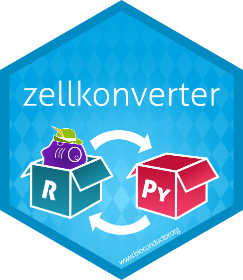

zellkonverter is a small package for converting between SingleCellExperiment objects and alternative objects for storing single-cell RNA-sequencing data (such as AnnData). It is built on top of the basilisk package.
For documentation see please refer to Bioconductor. Development documentation is also available on Bioconductor devel or the pkgdown site.
Installation
zellkonverter can be installed from Bioconductor using the BiocManager package:
if (!requireNamespace("BiocManager", quietly=TRUE)) {
install.packages("BiocManager")
}
BiocManager::install("zellkonverter")Build status
| Source | Checks | Updated |
|---|---|---|
| Bioc release |  |
 |
| Bioc devel |  |
 |
| GitHub actions |  |
Code of Conduct
Please note that the zellkonverter project is released with a Contributor Code of Conduct. By contributing to this project, you agree to abide by its terms.